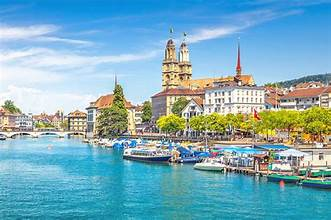
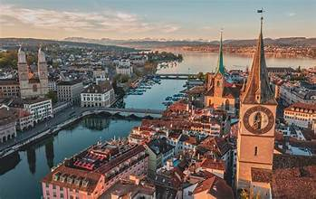
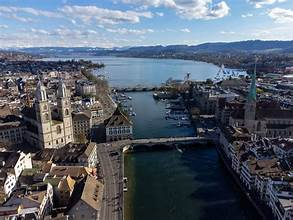
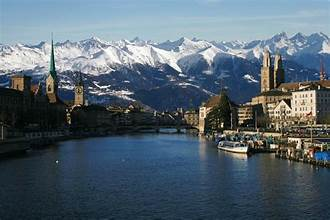

I visited this place at 15th July and I stayed a week to explore the most beautiful sites of
Switzerland. Serios this place is very clean not like in Moldova and is very beautiful
This is the most expensive landlocked country in central Europe.
Also fun fact: Switzerland flag is a square (Only 2 flags are like this.)

Zurich, the largest city in Switzerland, is special for several reasons:
Economic Hub: Zurich is a major global financial center, home to many banks, insurance companies, and financial institutions. It is also the location of the Swiss stock exchange.
High Quality of Life: Consistently ranked among the cities with the highest quality of life, Zurich offers excellent infrastructure, healthcare, education, and public services.
Cultural Scene: Zurich boasts a vibrant cultural scene with numerous museums, theaters, galleries, and music venues. The Kunsthaus Zürich and the Swiss National Museum are notable highlights.

Natural Beauty: Nestled on the shores of Lake Zurich and surrounded by mountains, the city offers stunning natural landscapes and outdoor recreational opportunities.
Historical Significance: Zurich has a rich history, evident in its well-preserved medieval old town (Altstadt), historical buildings, and landmarks like the Grossmünster and Fraumünster churches.
Education and Research: The city is a hub for education and research, with institutions like ETH Zurich and the University of Zurich being renowned worldwide.

Innovation and Startups: Zurich is known for its innovative environment and thriving startup ecosystem, particularly in tech, finance, and life sciences.
Multiculturalism: As a cosmopolitan city, Zurich is home to a diverse population and offers a range of international cuisines, festivals, and events.
Efficient Public Transport: Zurich has a highly efficient and well-connected public transportation system, making it easy to navigate the city and its surroundings.
Festivals and Events: The city hosts numerous festivals and events throughout the year, including the Zurich Film Festival, Street Parade, and Züri Fäscht, a large public festival held every three years.

Site by: Gheruha Bogdan